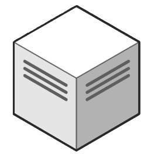
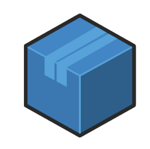
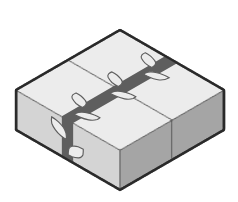
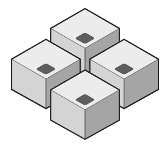

Head of Data & IT
Hana Yasmine
I build practical IT solutions, working across data, automation, and application development. Main Expertise: AI, SQL, Python.
About

Building and managing data pipelines, connecting different data sources, organizing data, and making sure it is reliable and ready to use.
Using AI techniques, data analysis, and reporting to find useful information, identify patterns, and support better decisions.
Automating repetitive tasks and manual processes to save time, reduce errors, and improve efficiency. It's mainly linked to data management and AI.

Designing how applications and systems are made, choosing the right technologies, and building solutions that are reliable and easy to maintain.

Planning technology projects, choosing suitable tools, setting priorities, and making technical decisions that support business needs.

Turning complex information and manual processes into practical, reliable, and easy-to-use digital systems. Also making sure old tools are modernized.
<\> Skills
‧₊˚ ☽⋅Programming languages: Python, R, Java, C++, C#, C, Matlab
‧₊˚ ☽ ⋅Data Engineering: ETL pipelines, data cleaning, data transformation, data quality
‧₊˚ ☽ ⋅Machine Learning: Scikit-learn, feature engineering, anomaly detection
‧₊˚ ☽ ⋅Data & Visualization: Pandas, Matplotlib, ggplot2, Excel
‧₊˚ ☽ ⋅Tools: SQL, Git, VS Code, Docker, FastAPI, Streamlit, Unity, Godot
‧₊˚ ☽ ⋅OS: Microsoft, Linux
‧₊˚ ☽ ⋅Areas: Automation, reporting, business analytics, AI applications
‧₊˚ ☽ ⋅Other: MS Office, Jira, Technical writing, Scrum, Agile, Kanban
Projects
NeuroINN
NeuroINN is a standalone application used to predict medical indication using supervised learning. The goal of the project was to create a model capable of predicting medical results by analyzing sets of combinations. The first step was the data preparation : molecules represented data entries while medical indications the targets. Next step was to use one-hot encoding to transform the categorical data into adapted shape for the deep learning model. It was designed with different layers (input, hidden and output), and with several rounds of optimisation to reach the best evaluation metrics. A simple application was made to upload new input data and use the trained model to predict medical indications.
Questionnaire Analysis
The project main focus was to transform and encode data from various questionnaires done for educational institutions, to improve the statistical analysis and add a predictive model. The first step was to get all the necessary information divided into more than 100 columns and apply preprocessing and cleaning, then insert additional data like country classification, status of the institution and its size. A descriptive analysis was applied by creating multiple graphical summaries of the processed data. And for the modeling part, we used the context variables to develop explanatory logistic models and Baysian networks.
VOD Platform
The project aims to develop a VOD platform (Video On Demand) that allows users to publish and watch videos. It's main user base is the educational sector and entertainement, with an option to integrate Moodle to share external links, since Moodle cannot handle videos directly, the videos will be stored on the VOD platform’s servers, and Moodle will simply display the links. Initial deployment is on a VM, followed by migration to a container-based infrastructure to increase storage capacity.
Data Check
Generating automatic Excel reports for pharaceutical data. The solution manage several entries and then generates: global analysis, city analysis, individual analysis and ad-hoc requests. Each new period has an additional analysis for errors as a first QC.
Supplier management web app
Development and implementation of a web application for supplier management, using JEE (Java Entreprise Edition) and SQL. the main features are: supplier management (interface for adding, modifying and deleting suppliers), SQL database (storage and management of supplier information), update and improve the old application then link it to existing apps that are using the same database.
Poki v1
Poki v1 is a project that aims to do an analysis for pharmaceutical data to identify and clean up anomalies, calculate average prices, and provide detailed reports. Main features are: cleaning data (for volumes, pack size, dosage, prices), adding new data (doubtful information, outlier detection, outlier cleaning, statistical calculations). The analyses are done by city, type of pharmacy and products SKU.
Pharmacies matching
Developed an automated tool to match pharmacy records across different data sources using text similarity, fuzzy matching, and geographical information. The tool identifies duplicates, enriches pharmacy databases, and flags uncertain matches for manual verification.
Universal Account
Designed a unified account database to centralize and enrich pharmacy and customer data from multiple sources. The project focused on improving data quality, detecting duplicates, automating account verification, and maintaining consistent customer code mappings.
CRM & Universal Account Synchronization with Airflow
Configured Apache Airflow to automate synchronization between CRM and Universal Account databases. Set up local development using Docker and deployed the production environment using Google Cloud Composer.
Market performance Reporting API
Reporting solution to provide key e-commerce performance indicators in compliance with specific country regulatory requirements. Designed a web reporting platform with monthly data updates, covering users, suppliers, products, transactions and other valuable information.
Automated QC reporting system
Developed an automated quality control reporting system to detect anomalies and outliers in data records. Built an interactive platform allowing users to explore data, monitor quality indicators and identify potential issues (while reducing manual QC tasks).
Pharmacy data enrichment
Improved pharmacy data quality by identifying duplicates and enriching records with accurate location and contact information using Google Places API. Integrated verified pharmacy details into the general DB.
Image analysis with OpenAI Vision Models
Explored OpenAI vision models to analyze pharmacy storefront images and extract visual information, including object recognition, text extraction (OCR), image classification and scene description. Tested API-based image analysis to check its potential for automated pharmacy identification and data enrichment.
Experience
Data Scientist
October 2022 — PresentSanisphere / POC Pharma
Working on data processing, data quality, reporting automation, ETL workflows and data model design using Python, SQL and R.
Data Engineer
September 2024 — February 2025Dats Connexion
Built, tested and optimized data solutions, including data pipelines, quality checks and scalable workflows.
Software Engineer
February 2022 — September 2022Bank of Algeria
Worked on a supplier management application using Java EE and SQL.
Assistant Research Engineer
January 2021 — January 2022CERIST
Contributed to a video-on-demand platform and worked with Python, Docker and Kolla-Ansible.
Freelance Developer
February 2020 — November 2020Worked on Python and machine learning applications, Excel automation and LaTeX training.
Contact
Interested in discussing data engineering, automation or AI projects?